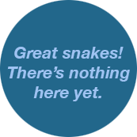

NCNYT
An n-curses based frontend to the New York Times. A hackNY Spring 2012 Project with Howie Mao, and Zack Newman.
Visit Website »

An n-curses based frontend to the New York Times. A hackNY Spring 2012 Project with Howie Mao, and Zack Newman.
Visit Website »